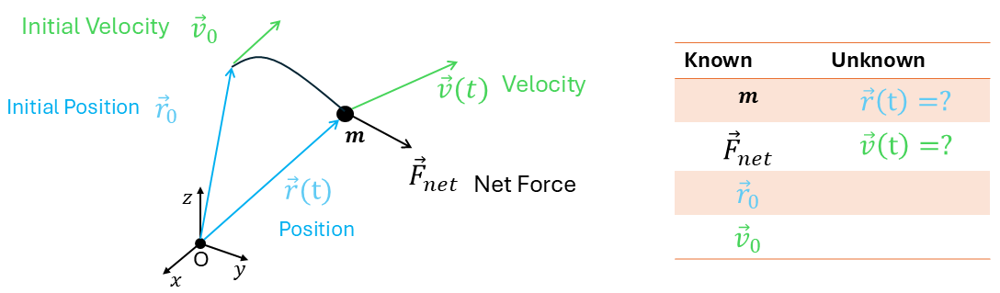
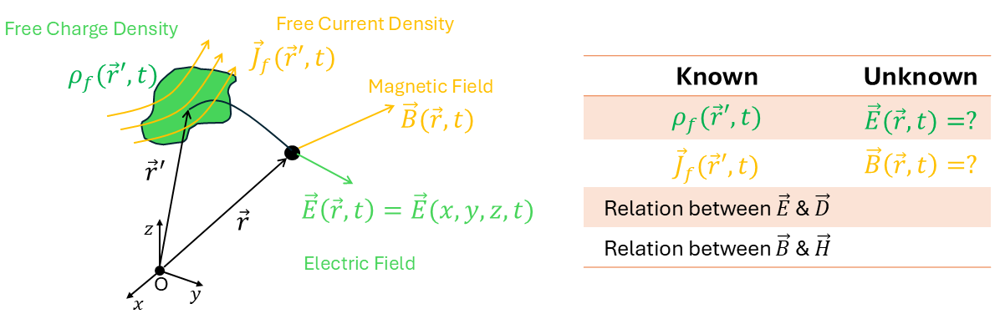
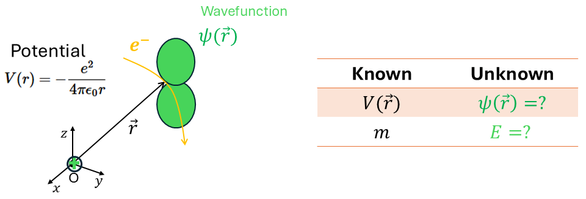

Chapter 1
Infinite Series and Power Series
Motivation and Overview
Mathematics is the language of physics. From Newton's laws to Schrödinger's equation, every major theory in physics is expressed through mathematical models. As a physics student, your success depends on mastering the mathematical techniques necessary to solve real physical problems.
Mechanics starts with Newton’s second law, leading to second-order ordinary differential equations (ODEs):

Mathematical Topics:
Ordinary Differential Equations (Ch. 8):
First- and second-order equations, Laplace transforms
Linear Algebra (Ch. 3):
Systems of equations, eigenvalue problems
Infinite Series and Power Series (Ch. 1):
Series approximations to motion
Applications: Oscillators, planetary motion, variational principles
Maxwell’s equations describe how electric and magnetic fields behave in materials:

Mathematical Topics:
Vector Analysis (Ch. 6):
Gradient, divergence, curl; Gauss’s and Stokes’s theorems
Partial Differential Equations (Ch. 13):
Laplace’s, Poisson’s, and wave equations
Fourier Series and Transforms (Ch. 7):
Solving boundary value problems for fields
Multiple Integrals (Ch. 5):
Charge and current distributions in space
Applications: Fields in dielectrics, waveguides, AC circuits
Quantum mechanics uses wavefunctions to describe particles. The key equation is Schrödinger’s equation:

Mathematical Topics:
Complex Numbers (Ch. 2):
Euler’s formula, imaginary amplitudes
Linear Algebra (Ch. 3):
Operators, eigenvalues, Hilbert space
Fourier Series and Transforms (Ch. 7):
Analyzing wavefunctions in different bases
Partial Differential Equations (Ch. 10):
Solving time-independent and time-dependent Schrödinger equations
Power Series (Ch. 1):
Special functions: Hermite, Laguerre, etc.
Applications: Atomic structure, tunneling, harmonic oscillator
Definitions and Notation
A sequence is an ordered list of numbers:
where \(a_1\) is the first term and \(a_n\) is the general term.
\(1, 2, 3, \dots, n, \dots \quad \Rightarrow a_1 = 1,\quad a_n = n\)
\(1^2, 2^2, 3^2, \dots, n^2, \dots \quad \Rightarrow a_1 = 1,\quad a_n = n^2\)
A partial sum \(S_N\) is the sum of the first \(N\) terms of a sequence:
\(S_4 = \sum_{n=1}^{4} n = 1 + 2 + 3 + 4 = 10\)
\(S_3 = \sum_{n=1}^{3} n^2 = 1^2 + 2^2 + 3^2 = 14\)
An infinite series is the sum of all terms in a sequence:
\(\sum_{n=1}^{\infty} n = 1 + 2 + 3 + \cdots\)
\(\sum_{n=1}^{\infty} n^2 = 1^2 + 2^2 + 3^2 + \cdots\)
\(\sum_{n=1}^{\infty} \dfrac{(-1)^{n-1} x^n}{(n - 1)!} = x - x^2 + \dfrac{x^3}{2} - \cdots\)
\(n!\) (read "n factorial") is defined as:
\(n! = n \cdot (n - 1) \cdots 3 \cdot 2 \cdot 1\)
\(0! = 1\)
Example: \(5! = 5 \cdot 4 \cdot 3 \cdot 2 \cdot 1 = 120\)
Geometric Sequences and Series
A geometric sequence is a sequence where each term is obtained by multiplying the previous one by a fixed number \(r\) (called the common ratio):
Exponential Growth (e.g., Bacteria): \(2,\ 4,\ 8,\ 16,\ \dots\) with \(r = 2\)
Decay (e.g., Bouncing Ball): \(1,\ \frac{2}{3},\ \frac{4}{9},\ \frac{8}{27},\ \dots\) with \(r = \frac{2}{3}\)
Finite Geometric Series
The sum of the first \(N\) terms of a geometric series is:
Consider the geometric series
Multiply both sides by \(r\):
Subtracting these two equations gives
Factor the left-hand side:
Finally, dividing both sides by \((1-r)\) (valid when \(r \neq 1\)), we obtain
Infinite Geometric Series
An infinite geometric series of the form:
converges if and only if \(|r| < 1\). The sum is:
If \(|r| \geq 1\), the series diverges (i.e., it does not converge to a finite value).
A ball bounces to \(\frac{2}{3}\) of its previous height. Starting from 1 yard, the total distance is:
This is a geometric series with \(a = \frac{3}{10},\ r = \frac{1}{10}\):
The repeating part is geometric with:
\(a = \frac{285714}{10^6}\)
\(r = \frac{1}{10^6}\)
Thus:
Applications of Series
In the example of the bouncing ball, we saw that the sum of an infinite series can often be very close to the sum of a finite number of initial terms. This principle underlies many applications:
Many real-world problems cannot be solved exactly but can be expressed as an infinite series.
In practice, only as many terms as needed to achieve the desired accuracy are computed.
Series solutions are commonly used in solving:
Ordinary differential equations (Chapters 8 and 12),
Partial differential equations (Chapter 13),
Power series (series in powers of \(x\)) will be used later to define:
Functions of complex numbers (Chapter 2, Section 8),
Functions of matrices (Chapter 3, Section 6),
Fourier series (Chapter 7),
Special functions like Legendre and Bessel functions (Chapters 12 and 13).
Limit of the General Term as \(n \to \infty\)
The limit of the general term \(a_n\) of a sequence as \(n \to \infty\) is denoted by:
Evaluate:
Divide numerator and denominator by \(n^4\):
Evaluate:
Note: Although \(n\) is discrete, the limit is evaluated using a continuous extension \(f(x) = \frac{\ln x}{x}\).
Evaluate:
Take logarithm:
Hence:
Testing Series for Convergence
Preliminary Test
If \(\displaystyle \lim_{n\to\infty} a_n \neq 0\), the series \(\displaystyle \sum a_n\) diverges.
If \(\displaystyle \lim_{n\to\infty} a_n = 0\), further testing is required.
Test the series
Here \(a_n = \frac{n}{n+1} \to 1 \neq 0\) as \(n \to \infty\), so by the Preliminary Test the series diverges.
Comparison Test
Let \(\sum a_n\) be an unknown series.
If there exists a convergent series \(\sum b_n\) such that
then \(\sum a_n\) converges.
If there exists a divergent series \(\sum d_n\) such that
then \(\sum a_n\) diverges.
Test \(\displaystyle\sum_{n=1}^\infty \frac{1}{n!}\) for convergence.
For \(n > 3\), we have \(n! \ge 2^n\), so
Since the geometric series \(\sum \tfrac{1}{2^n}\) converges, the Comparison Test implies that \(\sum \tfrac{1}{n!}\) converges.
Integral Test
Let \(a_n = f(n)\) where \(f(x)\) is positive, continuous, and decreasing for \(x > M\).
Then the infinite series
converges if and only if the improper integral
is finite.
Test \(\displaystyle\sum_{n=1}^\infty \frac{1}{n}\).
Let \(f(x) = \tfrac{1}{x}\). Then
so by the Integral Test, the harmonic series diverges.
Ratio Test
Let
Then
Test \(\displaystyle\sum_{n=0}^\infty \frac{1}{n!}\).
Here \(a_n = \tfrac{1}{n!}\), so
and the series converges by the Ratio Test.
Limit Comparison Test
If
then the two series \(\sum a_n\) and \(\sum b_n\) either both converge or both diverge.
Test
for convergence.
For large \(n\),
Since \(\sum \tfrac{1}{n^2}\) converges, the given series converges by the Limit Comparison Test.
Alternating Series
Many series we have studied so far have non-negative terms. We now consider an important class of series whose terms alternate in sign.
A series is called alternating if the signs of its terms switch between positive and negative, for example
Equivalently, it may be written in the form
An alternating series of the form \(\eqref{eq:alt-series-general}\)
converges if
Absolute vs. Conditional Convergence
If \(\displaystyle\sum |a_n|\) converges, then \(\displaystyle\sum a_n\) converges absolutely.
If \(\displaystyle\sum a_n\) converges but \(\displaystyle\sum |a_n|\) diverges, then \(\displaystyle\sum a_n\) is conditionally convergent.
Summary Table
| Test | Key Idea |
| Preliminary Test | If \(\lim a_n \neq 0\), the series diverges. |
| Comparison Test | Compare \(a_n\) to a known convergent/divergent series. |
| Integral Test | Integrate \(f(x)\) corresponding to \(a_n\). |
| Ratio Test | Use \(\rho = \lim |a_{n+1}/a_n|\). |
| Limit Comparison Test | Compare using \(\displaystyle \lim \frac{a_n}{b_n}\). |
Power Series
A power series centered at \(a\) is an infinite series of the form
where:
\(c_n\) are constants called the coefficients,
\(a\) is the center of the series,
\(x\) is the variable.
When the center is \(a = 0\), the series is called a Maclaurin-type power series.
Radius and Interval of Convergence
For a power series \(\displaystyle \sum_{n=0}^{\infty} c_n (x-a)^n\), there exists a real number \(R \in [0,\infty]\), called the radius of convergence, such that:
The series converges absolutely when \(|x-a| < R\);
The series diverges when \(|x-a| > R\);
When \(|x-a| = R\), convergence must be checked separately.
If
with conventions: \(\rho=0 \Rightarrow R=\infty\) and \(\rho=\infty \Rightarrow R=0\).
Find the radius and interval of convergence of
Here \(c_n = \frac{1}{\sqrt{n+1}}\), so
Thus, convergence occurs for \(|x+2|<1\), i.e., \(-3 < x < -1\).
Endpoints:
\(x=-3\): \(\sum \frac{(-1)^n}{\sqrt{n+1}}\) is alternating with terms \(\to 0\) and decreasing \(\Rightarrow\) converges (conditionally).
\(x=-1\): \(\sum \frac{1}{\sqrt{n+1}}\) is a \(p\)-series with \(p=\frac12<1\) \(\Rightarrow\) diverges.
Find the radius and interval of convergence of
We have
Thus \(R = \frac{1}{1/3} = 3\).
So \(|x-2|<3 \implies -1<x<5\). Check endpoints:
At \(x=-1\): series becomes \(\sum (-1)^n / (n\,3^n)\), converges absolutely.
At \(x=5\): series becomes \(\sum 1/(n\,3^n)\), converges absolutely.
Hence the interval of convergence is \([-1,5]\).
At the endpoints, you often use the Alternating Series Test or comparison with a \(p\)-series to decide convergence.
Theorems About Power Series
Suppose
has radius of convergence \(R>0\). Then for every \(x\) with \(|x-a|<R\), the following properties hold:
Differentiation and Integration. The series for \(f(x)\) may be differentiated or integrated term by term:
\[ f'(x) = \sum_{n=1}^\infty n\,c_n\,(x-a)^{n-1}, \qquad \int f(x)\,dx = \sum_{n=0}^\infty \frac{c_n}{n+1}(x-a)^{\,n+1} + C. \]Both resulting power series have the same radius of convergence \(R\).
Algebra of Series. Power series may be added, subtracted, and multiplied term by term. The resulting series converges at least in the intersection of the original intervals of convergence. Division is valid provided the denominator does not vanish at the center \(x=a\); if a factor cancels (e.g. \(\frac{\sin x}{x}\)), a power-series representation still exists.
Substitution. If \(g(x)\) is a function such that \(|g(x)-a| < R\), then
\[ f(g(x)) = \sum_{n=0}^\infty c_n\,(g(x)-a)^n. \]Uniqueness. A power series represents a unique function on its interval of convergence, and the coefficients satisfy
\[ c_n = \frac{f^{(n)}(a)}{n!}. \]
Taylor and Maclaurin Series
Finding the Coefficients
Suppose a function \(f(x)\) can be expressed as a power series about \(x=a\):
Differentiating term by term yields
Evaluating successively at \(x=a\) gives
Therefore, in general,
If \(f\) has derivatives of all orders in an open interval containing \(a\), then
for every \(x\) in the interval where the series converges. This is called the Taylor series of \(f\) about \(x=a\).
From the assumption that \(f(x)\) can be written as a power series about \(x=a\), term-by-term differentiation shows that
Substituting these coefficients into the original power series yields
establishing the result. □
A Maclaurin series is a Taylor series centered at \(a=0\):
Maclaurin series for \(\sin x\):
Derivatives:
At \(x=0\):
Thus:
Common Maclaurin Series
Techniques for Obtaining Power Series Expansions
Power series expansions can be generated or modified using several systematic techniques. These allow you to construct new series from known ones without starting from scratch.
Using Differentiation and Integration
Start with the geometric series for \(|x|<1\):
Differentiate term-by-term:
Integrate term-by-term:
Both series have radius \(R=1\).
At \(|x-a|=R\), the differentiated or integrated series may behave differently from the original. Endpoint behavior must be checked separately.
Multiplying a Series by a Polynomial or by Another Series
If
and \(P(x)\) is a polynomial, then \(P(x)f(x)\) is obtained by multiplying \(P(x)\) through the series term-by-term and combining like powers. Similarly, two infinite series can be multiplied by forming their Cauchy product and collecting like powers of \(x\).
To find the series for \((x+1)\sin x\), we multiply the Maclaurin series for \(\sin x\) by \((x+1)\):
Expanding and combining like terms:
Thus, the series begins
This illustrates how multiplying a series by a polynomial simply shifts and rescales its terms. Notice that this method is easier than computing successive derivatives of \((x+1)\sin x\) to form its Taylor series directly.
To find the series for \(e^x \cos x\), multiply the Maclaurin series for \(e^x\) and \(\cos x\):
Expanding and combining like terms (up to \(x^4\)):
Collecting like powers of \(x\):
Thus the series begins
Note: When multiplying two series, line up the terms in columns by powers of \(x\) to simplify collecting. Also, be careful to include all products that contribute up to the desired power of \(x\), but do not carry along unnecessary higher-order terms.
Division of Two Series or of a Series by a Polynomial
If \(f(x) = g(x)/h(x)\) and \(h(a) \neq 0\), you can perform long division or solve for coefficients by matching powers.
Find the first four terms of the expansion of \(\frac{1}{(1-x)^2}\) using series division.
We know:
Multiply both sides by \(\frac{1}{1-x}\) again:
Collecting terms gives:
Using the Binomial Series
For any real or complex exponent \(p\),
where the generalized binomial coefficients are given by
The series converges for \(|x| < 1\), and may converge at \(|x| = 1\) depending on the value of \(p\).
Find the series for \(\dfrac{1}{1+x}\).
Here \(p=-1\). Thus
Evaluating the coefficients gives
Expand \(\sqrt{1+x} = (1+x)^{1/2}\).
Here \(p=\tfrac12\):
The first few terms are
From the general formula,
For nonnegative integers \(p\), the binomial expansion terminates after \(n=p\), giving the usual finite binomial theorem. For non-integers \(p\), the series is infinite and converges for \(|x|<1\).
Substitution of a Polynomial or a Series into Another Series
From \(\frac{1}{1-t} = \sum_{n=0}^\infty t^n\), substitute \(t = x^2\):
Find the Maclaurin series of \(e^{\tan x}\) up to \(x^4\).
First, use
Let \(u=\tan x\). Then
Compute powers of \(u\) to the needed order:
Substitute:
(The radius of convergence is limited by the nearest pole of \(\tan x\), so \(R=\pi/2\).)
Any manipulation such as multiplication, differentiation, integration, or substitution can alter the radius of convergence. Always verify the new convergence interval after such operations.
Combination of Methods
You can combine multiplication, division, substitution, differentiation, and integration.
Find the Maclaurin series for \(\arctan x\).
We use the identity
First, expand the denominator as a binomial series:
Now integrate term by term:
Thus,
Taylor Series Using Basic Maclaurin Series
Taylor’s theorem:
gives the coefficients directly from derivatives at \(x=a\).
Expand \(\ln x\) about \(x=1\):
Let \(h = x-1\), so \(x = 1+h\):
Thus:
Some Applications
Approximating Functions
If a function is analytic, its Taylor polynomial provides an approximation whose accuracy improves with more terms.
Approximate \(\sqrt{1+x}\) for small \(x\):
From the binomial series with \(k=\frac12\):
For \(x=0.1\):
Actual value: \(\approx 1.04881\) (error \(\approx 6\times 10^{-5}\)).
| |p.18|p.32|p.45| Category | Example Formula | Main Feature / Description |
| Arithmetic | \(a + (a+d) + (a+2d) + \cdots\) | Constant difference \(d\) between terms. |
| Geometric | \(a + ar + ar^2 + \cdots\) | Constant ratio \(r\) between terms. |
| Harmonic | \(1 + \tfrac12 + \tfrac13 + \cdots\) | Reciprocal of positive integers (\(p=1\) case of \(p\)-series). |
| \(p\)-Series | \(\displaystyle \sum_{n=1}^\infty \frac{1}{n^p}\) | Converges for \(p>1\), diverges for \(p\le 1\). |
| Alternating | \(1 - \tfrac12 + \tfrac13 - \cdots\) | Signs alternate; may converge conditionally. |
| Power Series | \(\displaystyle \sum_{n=0}^\infty c_n (x-a)^n\) | Converges on an interval around \(x=a\). |
| Taylor Series | \(\displaystyle \sum_{n=0}^\infty \frac{f^{(n)}(a)}{n!}(x-a)^n\) | Power-series representation of a smooth function. |
| Maclaurin Series | \(\displaystyle \sum_{n=0}^\infty \frac{f^{(n)}(0)}{n!}x^n\) | Taylor series centered at \(a=0\). |
| Binomial Series | \(\displaystyle (1+x)^m = \sum_{n=0}^\infty \binom{m}{n}x^n\) | Valid for real or complex \(m\) (with radius of convergence). |
| Fourier Series | \(\displaystyle a_0 + \sum_{n=1}^\infty [ c_n\cos(nx) + b_n\sin(nx) ]\) | Represents periodic functions using sines and cosines. |